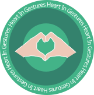

Hearting Gestures — гра для вивчення жестового алфавіту

Ми — група підлітків, учасниці міжнародного проекту Technovation Girls.
Наша мрія — допомагати дітям з вадами слуху вливатися у сучасне суспільство,
рухатися вперед і не відчувати себе зайвими.
Так народилась ідея доступної гри для навчання жестового українського алфавіту,
яка об'єднує людей різних культур і середовищ.
Місія
Сприяти розвитку інклюзивного суспільства, де кожен має голос.
Візія
Світ, у якому мовне різноманіття сприймається як сила,
а кожна людина — незалежно від її здатності чути —
має рівний доступ до спілкування, освіти й можливостей.
Мета
Сприяти побудові інклюзивного суспільства, де жестова мова є природною частиною взаємодії,
а технології стають засобом рівності, підтримки та взаєморозуміння.
Як грати в Hearting Gestures
1
Обери рівень складності. Гра побудована на жестах алфавіту української мови.
2
На екрані з'явиться вікно камери — виконуй жести, і система розпізнає їх за допомогою скелетної моделі руки.
3
Слово відображається як серія пропусків (_). Кожна невгадана літера залишається підкресленням.
4
Тримай руку в одному положенні ~2 секунди — система зафіксує жест. Прогрес-бар показує час утримання.
Відео та ресурси для вивчення жестового алфавіту
Корисні посилання
Легкий рівень
Середній рівень
Складний рівень
Разом будуємо інклюзивне майбутнє
Приєднуйтесь до нас
Станьте частиною нашої спільноти — разом ми можемо змінити світ!
З питань та пропозицій звертайтесь:
heartingestures@gmail.com
Ваші відгуки — важливі для нас
Нам важлива ваша думка!
Якщо у вас є ідеї щодо покращення гри або ви хочете поділитися враженнями — напишіть нам!
Надіслати відгук
Розповсюдження інформації
Розкажіть про наш проєкт друзям, у соцмережах чи на заходах.
Наш Instagram
З повагою, команда Grlpwr
Організації, що об'єднують людей з порушеннями слуху

УТОГ
Всеукраїнська громадська організація людей з вадами слуху, заснована у 1933 році.
Є членом Всесвітньої федерації глухих.
Регіональні та територіальні організації УТОГ об'єднують понад 50 000 громадян України з порушеннями слуху та мови.

ІНВАСПОРТ
Всеукраїнська громадська організація спортивного спрямування.
Спортивна федерація глухих України забезпечує розвиток олімпійського руху і спорту для людей з вадами слуху по всій країні.

ПОГ — Центр соціального бізнесу
Надає послуги перекладу жестової мови у будь-якому зручному форматі.
Оскільки багато сучасних слів не існують у жестовій мові,
команда активно використовує українську дактильну абетку.
Також проводить заходи з безбар'єрності.